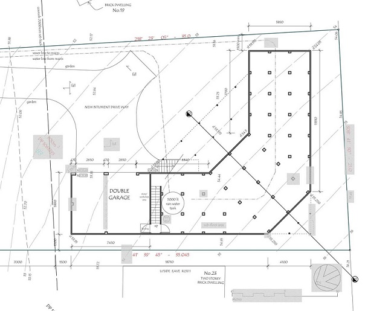

Construction Documentation
The DA is developed into detailed drawings, specifications and schedules to ensure the design vision is not lost during construction. The work is also co-ordinated and integrated with the drawings suitable for the Construction Certificate with Council and tendering for builders.
Contract Administration
Following the tender process and negotiations with the preferred builder, the construction documentation is developed into Contract documents between you and the builder. The administration of the contract between you and the builder is provided to ensure design quality is maintained throughout the construction process. This stage includes regular site visits, site meetings and certification processes.
Project Design
Australian Design Architects follows a simple process when designing your project:
Schematic design
We gain an understanding of your requirements and aspirations, followed by an assessment of the opportunities and constraints offered by the building site. A preliminary of regulations and restrictions is undertaken followed by a number of sketch design options to reach your preferred design.
These drawings have a level of detail suitable for obtaining cost estimates at the completion of this stage.
Detailed Design Development
Depending on the cost outcomes from the first stage, the preferred and approved design is developed into the final design for Development Application (DA) submission to Council. Pre-application meetings are organised with Council and adjoining neighbours to facilitate the planning process and assist in obtaining approval.
